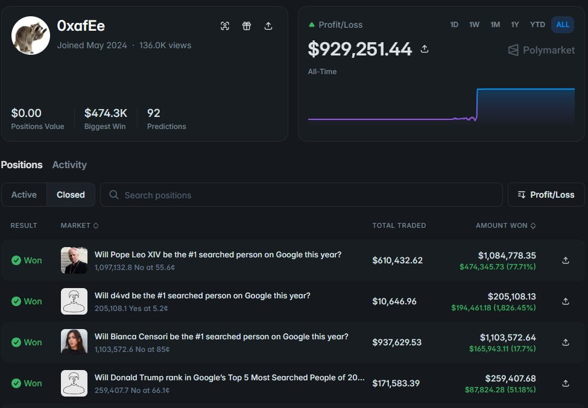

This Wallet Made $1M in a Day... Then Disappeared

A few hours before Google published its 2025 Year in Search list, a Polymarket wallet started loading up on positions across almost every "who will be the most-searched person" market on the platform. By the time the dust settled, the account had turned roughly $2.7 million in wagers into a $1.2 million profit — and it had done so by getting nearly every single call right.
The wallet's name at the time was AlphaRaccoon. Today it goes by 0xafEe, its all-time profit sits north of $929K, and 92 predictions in, its closed-position record reads like a highlight reel: a win on Pope Leo XIV, a win on d4vd, a win on Bianca Censori, a win on Donald Trump. Nearly all of it landed within the same few-day window in December.
The bet nobody else was making
The standout trade was d4vd — the 20-year-old singer nobody expected to top Google's search rankings. Polymarket was pricing that outcome at next to nothing, effectively a lottery ticket. AlphaRaccoon bought in anyway, turning roughly $10,600 into about $200,000 once d4vd was confirmed as the top-searched person of the year, a return north of 18x.
The rest of the book ran the opposite direction: big "No" positions against the favorites. Nearly $938,000 riding on Bianca Censori not taking the top spot. Large "No" stakes against Pope Leo XIV and Donald Trump doing the same. Every single one of those resolved in the wallet's favor. Across the full slate of Year in Search markets, the account reportedly went 22 for 23.
Odds that "strain statistical" belief
That phrase — the odds "strain statistical" credibility — is how more than one outlet described the win rate once people started paying attention. A trader can be good. A trader can be lucky. It's much harder to be both, across two dozen narrow, independent markets, in the space of a single week, with no visible research process behind any of it.
The first public flag came from a Meta engineer posting on X, who noted that Google's search results had briefly and accidentally appeared online before the official release — and that whoever was behind AlphaRaccoon had positioned almost the entire book right before that happened. Screenshots of the wallet's near-perfect record spread through crypto and tech circles within hours.
Then it went quiet
As soon as the speculation started, the trading stopped. The account's username disappeared, reverting to the anonymous string of characters it goes by today. On-chain records later showed the wallet moving roughly $5 million out through a series of crypto-swap services — including at least one tool that markets itself specifically as a way to strip wallet addresses off the blockchain.
For a while, that was the whole story: a wallet with an outrageous record, a username change, and a trail that seemed designed to go cold.
It didn't stay anonymous
It didn't work. Blockchain analysis traced the funds to a payment-processor account, and from there to a real identity: Michele Spagnuolo, a 36-year-old Italian citizen living in Switzerland who had spent 12 years as a software engineer on Google's information security team.
According to the criminal complaint unsealed by the U.S. Attorney's Office for the Southern District of New York, Spagnuolo had access to an internal Google tool carrying a "Google Confidential" banner that tracked search-trend data before it was made public. Prosecutors allege he used that access to inform his Year in Search bets, then tried to launder the proceeds once online sleuths started circling the account.
Spagnuolo was arrested in New York and charged with commodities fraud, wire fraud, and money laundering — charges that carry a combined statutory maximum of 50 years. He was released on a $2.25 million bond and has not entered a plea. Google placed him on leave, saying the tool he used was available to all employees but that trading on the data it contained was a clear violation of company policy. The CFTC has separately filed a civil complaint seeking to claw back his profits.
Why this matters beyond one wallet
This is the second insider-trading case Polymarket has been tied to in a matter of months — the first involved a U.S. Army Special Forces sergeant who allegedly used classified details about the operation that captured Nicolás Maduro to win roughly $400,000 on the platform. Polymarket has pointed to both cases as proof that its cooperation with regulators works; critics point to the same cases as proof of exactly how exposed prediction markets are to anyone with a privileged look behind the curtain.
The uncomfortable part for the industry is structural, not personal. Prediction markets are built on the idea that whoever knows the truth first should be rewarded for bringing that information into the price. That's the pitch. It's a much harder pitch to make when "knowing the truth first" means quietly pulling it from an employer's internal systems.
The takeaway
A wallet that goes 22-for-23 against genuinely long odds isn't a trading strategy you can reverse-engineer — it's a signal that something other than public information was priced in. What's changed since December isn't the math behind the trades. It's that a pseudonymous wallet and a "privacy" swap service turned out not to be as untraceable as they looked, and the person behind them now has a name, a bond, and a federal case.
See 0xafEe's historical positions and P&L directly on Polymarket.